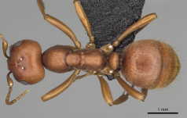
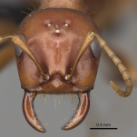

Polyergus rufescens
")


AntWeb
Behavior and biology: antprofiler.org
Hight quality pictures: antweb.org
Phylogeny: eol.org
Taxonomy: HOL
Geographical Range: antmaps.org
Related
Changes in the cuticular hydrocarbon profile ot the slave-maker ant queen, Polyergus breviceps
Raid de Polyergus rufescens [french]
Aggressive behaviour of Formica workers against freshly emerged workers of Polyergus rufescens
Sociobiology of slave making ants - Patricia D 2001
Mating and post-mating behaviour of the European amazon ant, Polyergus rufescens 2013